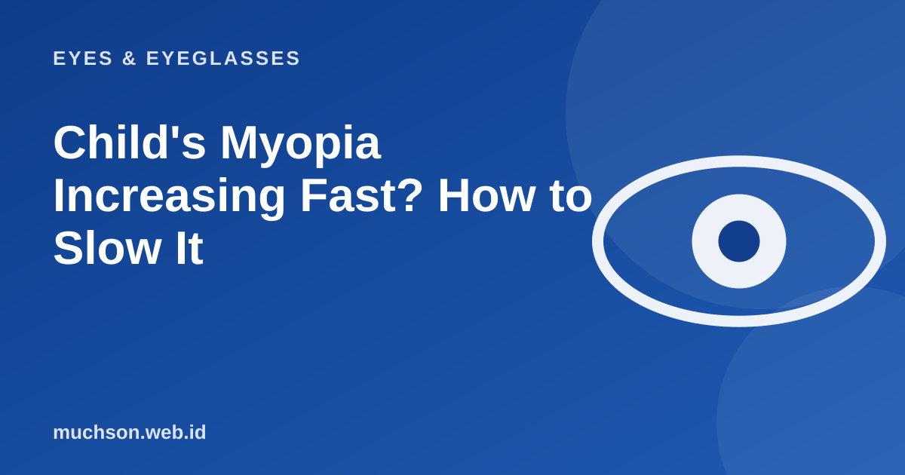

Home › Articles › Eyes & Eyeglasses
Eyes & EyeglassesChild's Myopia Increasing Fast? How to Slow It
Many parents are surprised: the glasses were changed only a few months ago and the minus has gone up again. In children this is common, because the eyeball is still growing. What can be done is not to stop it with tricks, but to manage the factors that are proven to have an effect.

Why does a child's minus rise easily?
Myopia in children happens mainly because the eyeball grows too long. During the growth years, the length of the eyeball keeps changing, so the right lens power shifts too. The minus can generally go on increasing until the late teens or early twenties. The known risk factors are parents who are also myopic, and a lifestyle with a lot of near activity and little time outdoors.
What has the strongest evidence: time outdoors
Studies of children show that more time outdoors is linked with a lower risk of myopia. Research summaries in circulation mention a range of about 90 to 120 minutes a day outdoors, and the WHO also advises that children not spend too much time indoors and take regular breaks from near work. The relationship between screen time and myopia is itself complicated and affected by many other factors, so do not simplify it to "screens are certainly the cause".
Habits that help
- Regular breaks when reading or using a device: about 20 minutes, then look far.
- A sufficient reading distance, about 30 cm or more, with good light.
- Outdoor activity every day.
- Enough sleep.
- Regular eye checks, at least once a year, or more often if the minus rises quickly.
There are medical treatments to slow a child's myopia, for example low-dose eye drops or lenses with a special design. All of them need assessment and supervision by an eye doctor. Do not start them yourself.
Signs a child needs to be checked soon
What about children's glasses?
Children's glasses need a flexible, light material that is comfortable to wear all day. The frame size and the lens distance must be right so the lens is truly in front of the eye. Do not delay glasses in the hope that the minus will not rise: blurred vision actually holds back learning.